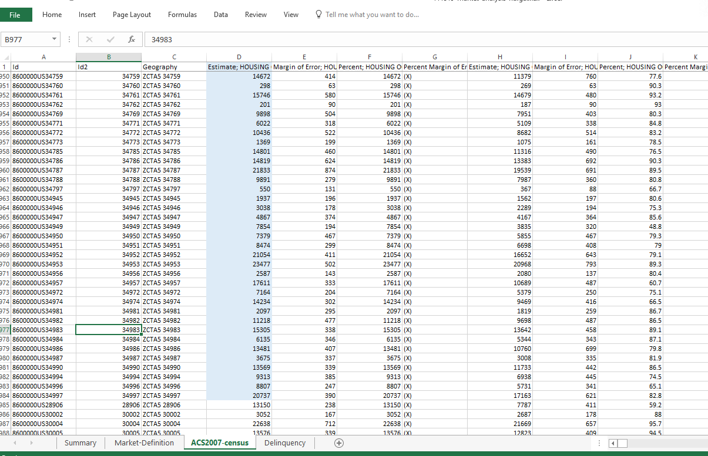
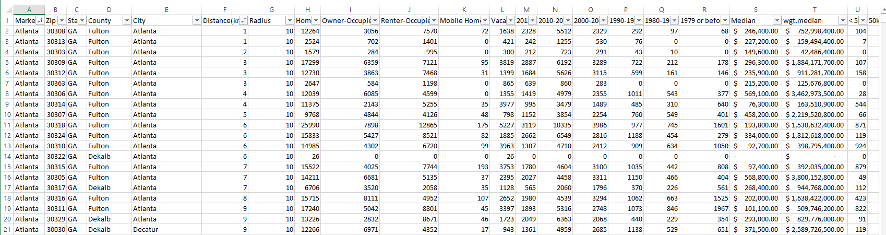
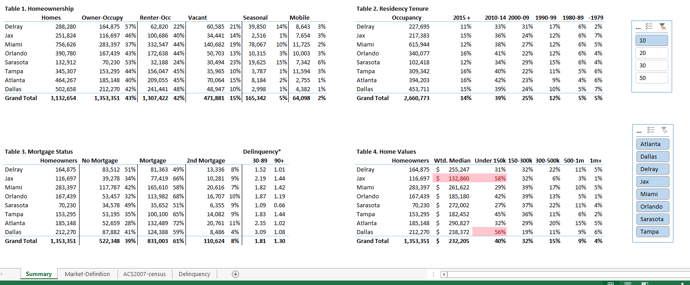

Residential PropTech · Data Strategy & Market Intelligence
Building a multi-dimensional market intelligence framework from publicly available Census data to give C-suite leadership a rigorous analytical foundation for geographic expansion decisions.
The Business Context
As the company's right-to-list agreement product gained traction in its initial Florida markets, the question of where to expand next became strategically urgent. The business model’s economics were sensitive to local market conditions in ways that were not immediately obvious at first glance. While a market with high population density may look attractive on the surface, the product may perform poorly if ownership rates were low, property values did not align with the target segment, or if ownership tenure was longer than average.
Expansion decisions made without this context risked deploying significant marketing capital into markets where the product was structurally unlikely to perform. This would burn operating cash on lead acquisition in geographies where the addressable opportunity was fundamentally limited. At the outset, there was no framework for evaluating this.
My Role
A member of the Executive leadership team asked if I could put some data together to help inform expansion thinking. What followed was entirely self-directed. I designed the methodology, identified and sourced the data, built the transformation and aggregation logic, and delivered a fully structured reporting framework for executive consumption from end to end.
Identifying the Right Dimensions
TThe first challenge was deciding what to measure and where to source the data. Geographic expansion analysis typically starts with population and household counts, but for this particular product those numbers could be misleading. What mattered was identifying a specific subset of the population: homeowners with meaningful equity, stable tenure, home values within the product's qualifying range, and low delinquency risk.
I identified four measurement dimensions that mapped directly to the business's specific variables:
Building the Data Infrastructure
The primary data source was the American Community Survey. The Census Bureau's ACS five-year estimates provided the sample depth required for reliable ZIP-code-level analysis. I exported and transformed raw ACS datasets across homeownership, tenure, and home value dimensions, building the aggregation logic that rolled ZIP-level data up through city, MSA, and state levels into a coherent reporting hierarchy.
Mortgage delinquency data was sourced separately and integrated at the MSA level, extrapolated across the geographic hierarchy where ZIP-level granularity wasn't available.
The result was a reporting framework that could answer a specific question at any geographic level: given this market's homeownership profile, tenure distribution, delinquency environment, and home value composition, how large is the genuinely addressable opportunity and how attractive is it relative to the product's economics?
ACS Census Data Import - ZIP-Level Raw Data

Raw ACS five-year estimate data at the ZIP code level. Thousands of rows of housing unit estimates, occupancy rates, tenure cohorts, and home value distributions processed and transformed into the aggregated reporting framework.
Market Definition - ZIP to MSA Aggregation

The market definition layer - ZIP-level data aggregated by market with homeownership counts, occupancy types, tenure cohort distributions, median home values, and weighted medians. This transformation layer fed the executive summary reporting.
Executive Summary - Four-Dimension Market Analysis

The executive-facing deliverable - four measurement dimensions across several markets simultaneously. Table 1: Homeownership rates and owner-occupied counts. Table 2: Residency tenure cohort distribution. Table 3: Mortgage status and delinquency rates. Table 4: Home value distribution across qualifying price bands. Highlighted cells indicate markets where home value concentration fell below the product threshold providing a direct signal to deprioritize those geographies.
The Outcome
The framework became a reference tool in C-level expansion strategy discussions as the business grew from 3 markets to 33 states. Market entry decisions were evaluated against the data alongside legal, regulatory, and operational considerations.
Critically, the framework did more than identify attractive markets, it provided analytical cover for decisions not to enter markets that appeared attractive on conventional measures. High-density metros with strong name recognition but structurally low homeownership rates, or markets where home value distributions showed the majority of properties below the product's qualifying threshold, could be deprioritized with data rather than intuition. That kind of disciplined capital allocation was meaningful in a business model where every market entry required upfront marketing and regulatory investment before any revenue was generated.
What I'd Do Differently
The framework presented four reporting dimensions as parallel tables, homeownership, tenure, home values, and mortgage delinquency, each of which answering the question "how does this market look" independently. What it didn't do was answer "which market should we enter next" directly.
In hindsight, I should have built a composite scoring model on top of the four dimensions, weighing each variable by its relative importance to the product's economics and producing a single market attractiveness score for each geography. Executives could rank and sequence market entry decisions from that score rather than synthesizing four separate tables themselves.
Let's Talk
I'm currently exploring Senior Product Manager opportunities in platform, data systems, and operational automation — remote, nationwide.
Connect on LinkedIn →